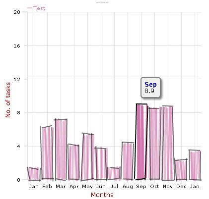

Added by Mark Ashworth, last edited by Mark Ashworth on Apr 21, 2008
()
| Name | Connext Graph Plugin |
|---|---|
| Publisher | Mark Ashworth |
| License | Open Source (ASL2) |
| Version | 0.7 |
| Compatibility | Struts 2.0.2+ |
| Homepage | https://connext-graphs.dev.java.net |
| Download | https://connext-graphs.dev.java.net/servlets/ProjectDocumentList |
| Rating? |

|
Overview
The Connext Graphs allows web applications to make use of the Open Flash Chart charts.
Features
- Struts 2 tag to embed the Open Flash Chart movie in the JSP page
- Provide a controller model to generate the data file that it used to control the chart
Changes
0.7 Release
- Fixed the chart title font and color problem
- Removed the link to the Open Flash Chart website
- Added Pie Chart support
- Linked in the Open Flash Chart 1.9.7 release
0.6 Release
- Added support for the sketch bar chart thanks to Oleh Lozynskyy.
- Linked in the Open Flash Chart 1.9.6 release
The following constructor is used to create the sketch bar chart
The following is complete snippet taken from the Connext-Graphs Demo web application that demonstrates the sketch bar chart

0.5 Release
- Added support for the 3D bar chart
0.4 Release
- Added support for bar and bar_fill charts
Upcoming Features
0.5 Release
- Support for 3D bar charts
- Support for pie charts
0.5+ Release
- FreeMarker tags
- Velocity tags
Project
The project is accessible at https://connext-graphs.dev.java.net/
Example
- Add the connext-graph.jar to the WEb_INF/lib folder
- Include the taglib in your page
- Insert the graph tag into your JSP page. In the example the data.txt file contains the controller logic for the graph. If you would a Struts 2 action to provide the controller logic then place it's fully qualified URL in the url property. Example, /contractor/Graph.action if the Graph action provides the logic.
- Code the Graph action class. Below is an example of the example01 method
- Code the graph.jsp page to output the Graph.value property
- Remember to put cache control off
Resources
Version History
| Version | Date | Author | Notes |
|---|---|---|---|
| 0.1 | Jun 20, 2007 | Mark Ashworth | Initial release |
| 0.2 | Jun 23, 2007 | Mark Ashworth | Added the controller and line graph support |
| 0.3 | Aug 18, 2007 | Mark Ashworth | Resolved the issue with the Tomcat tagSupport.xml file |
| 0.4 | Aug 20, 2007 | Mark Ashworth | Added support for bar and filled bar charts |